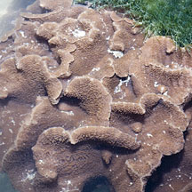
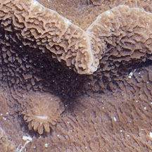
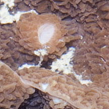
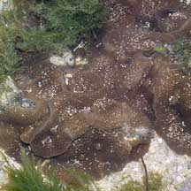
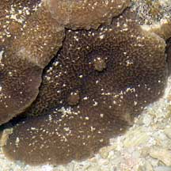
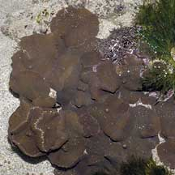
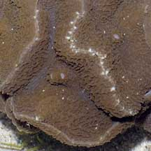
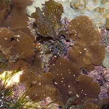
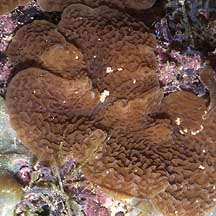

|
|
| corallimorphs text index | photo index |
| Phylum Cnidaria > Class Anthozoa > Subclass Zoantharia/Hexacorallia > Order Corallimorpharia |
| Ridged
corallimorph Platyzoanthus mussoides Family Discosomidae updated Jul 2024 Where seen? These little ridged disk-like animal is sometimes seen on our Southern shores, growing on coral rubble. Features: Each polyp about 4-5cm in diameter, in a group of 5-10. Oral disk has a ridged surface. In some the ridges form a maze-like pattern, in others the ridges radiate in a straight line from the central mouth. The mouth is usually held upturned. Colours seen a uniform unpatterned brown, dark to orangey or pinkish brown. Status and threats: There is inadequate information as at 2024 to make an informed assesment of its conservation status in Singapore. |
|
 Sisters Island, Jan 12 |
 |
 |
|
 Sisters Islands, Feb 06  Splitting up into two? |
 Sentosa, Jun 06  |
 St John's Island, Aug 05  |
*Species are difficult to positively identify without close examination.
On this website, the animals are grouped by external features for convenience of display.
| Ridged corallimorphs on Singapore shores |
On wildsingapore
flickr
|
| Other sightings on Singapore shores |
|
References
|